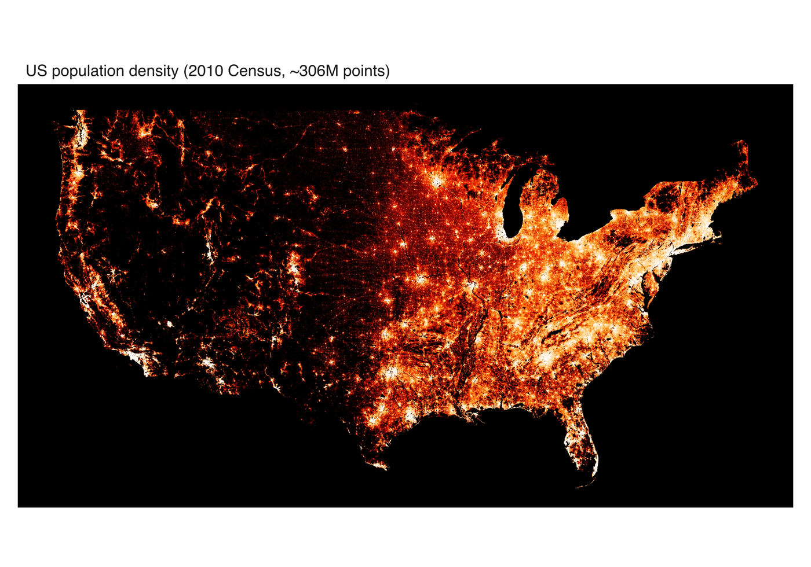
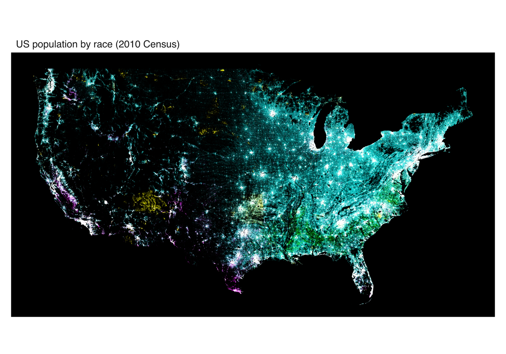

Scatter plots break down long before you run out of memory. Past a few tens of thousands of overlapping points, markers stop landing on empty canvas and start landing on each other. The picture saturates: you can no longer tell a region with a thousand points from one with a million, and drawing every marker only gets slower. This is overplotting, and no amount of transparency fully fixes it.
Datashading takes a different route. Instead of drawing points, it bins them into a grid sized to the output, counts how many fall in each cell, and colours each cell by that count. The result is a single raster whose cost is set by the grid resolution, not the number of points. Ten thousand points or ten million, the image takes about the same time to make, and density is shown honestly because it is measured rather than implied by overlap.
In vellumplot this is mark_datashade(). It bins x and y into a width-by-height canvas in one pass and colours each cell by density, drawing one raster that fills the panel. The binning itself is done by the backend’s vellum::datashade(), whose datashading article covers the aggregation engine, the reductions, and the equalisation options in depth. Because the cell colour encodes density, per-point aesthetics like colour and size do not apply. The statistical marks article introduces it on a synthetic half-million points; here we push it as far as it goes.
The US Census, about 306 million points
The canonical stress test for datashading is the datashader US Census example: one point per person from the 2010 US Census, roughly 306 million rows, each tagged with a location and a race. It is far too many points to plot as markers, and it is a good showcase precisely because the interesting structure lives across an enormous dynamic range, from empty desert to dense city cores.
The figures below are produced by inst/examples/19-datashader-census.R. That script is a heavy showcase, not a quick example: it downloads a 1.44 GB Parquet dataset once and needs several gigabytes of RAM for the full run (you can set an n_max in the script to smoke-test on a spatial subset first). The images here are scaled down from the full-resolution exports.
Population density
The first map shades every person by local population density on a single colour ramp, with histogram equalisation (how = "eq_hist") to spread that huge dynamic range across the ramp so both sparse and dense regions stay legible. It is the classic “where do people live” map, and the whole country emerges from a third of a billion anonymous points.

Coloured by race
The second map colours the same points by race. vellumplot has no single-call categorical shading, so this reproduces datashader’s count_cat by hand: one mark_datashade() layer per race, each ramping from black to its own hue, all composited with blend = "screen". On a black panel, screen blending shows each hue at full strength where a group dominates and mixes hues where groups overlap, so the segregation and mixing patterns of American cities read directly off the colour.

Resolution: aggregation, not dpi
One practical lesson from the census script is worth stating on its own, because it trips people up. There are two different resolutions in play, and they are not interchangeable:
- The aggregation resolution is the
widthandheightyou pass tomark_datashade(). This is the size of the grid the points are counted into, and it sets how much detail the shaded map actually contains. - The page resolution is
width * dpifromvplot(). This only rescales the finished raster.
A high dpi over a small aggregation grid just upsamples a small image, so it looks blurry. For a genuinely high-resolution export you have to raise the aggregation width/height and give the page enough pixels that the panel is at least that wide, so the raster is drawn close to one-to-one rather than stretched. The census figures use a 5000-wide aggregation grid on a 6000-pixel page for exactly this reason.
When to reach for it
Datashading is the answer whenever a layer has so many rows that individual markers are neither informative nor fast: dense scatter plots, GPS traces, event logs, particle simulations. mark_point() even has an auto = TRUE switch that falls back to a datashaded raster automatically past a row threshold, so you can keep writing mark_point() and let vellumplot pick the representation. For the full argument list, see the mark_datashade() reference, and for the aggregation engine underneath it, vellum’s datashading article.